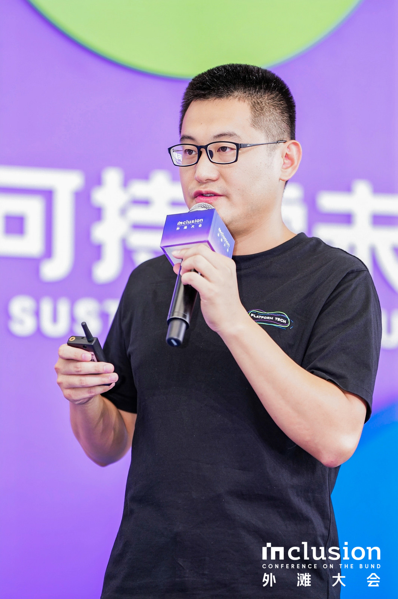

Shuang Liu is the Director of Confidential Computing at Ant Group. He initiated the open-source project HyperEnclave, an open, cross-platform trusted execution environment built on virtualization and TPM that runs existing TEE (Trusted Execution Environment) workloads on heterogeneous hardware; it is the first TEE to pass formal verification of its Rust monitor with CertiK.
He leads the team that develops the Asterinas confidential computing solution, which has been deployed at scale in finance and privacy-computing scenarios. The technology is showcased in Intel's customer story, has won the MIIT Technology Innovation Award, and was selected as a typical application case by the National Data Administration.
Research from the team has been published at top systems and security venues, including ASPLOS, USENIX ATC, DAC, and NDSS.
Before joining Ant Group, he spent more than 10 years at leading chip companies working on the system software of TEE, virtualization, and operating systems.
Last updated: Oct. 2026